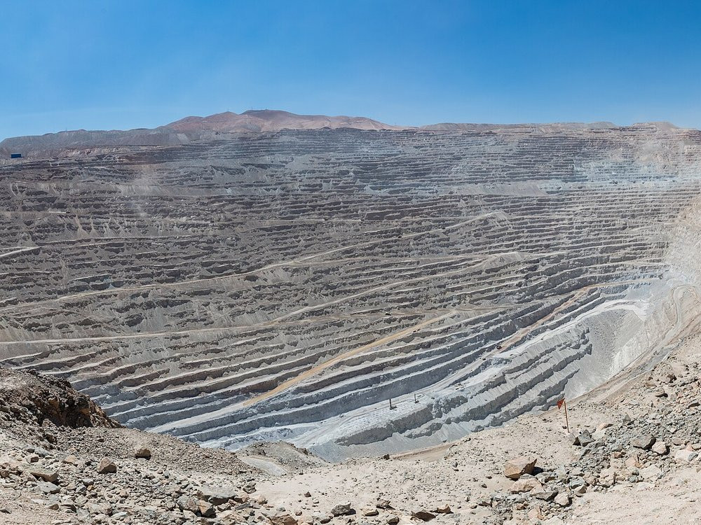
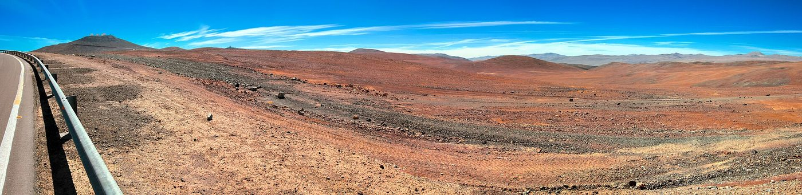
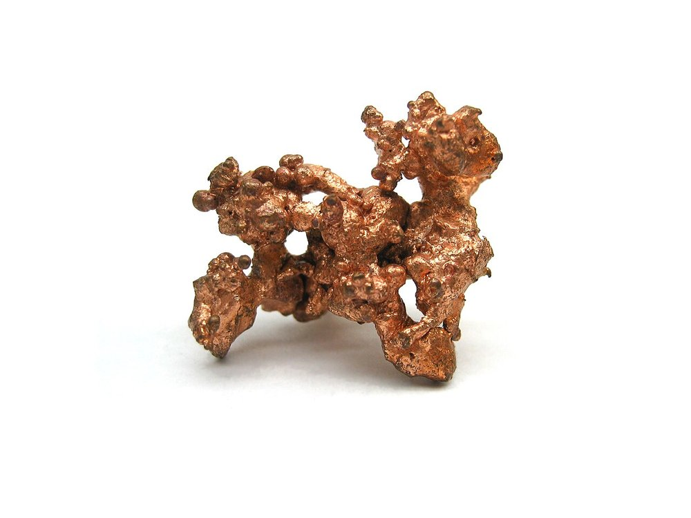
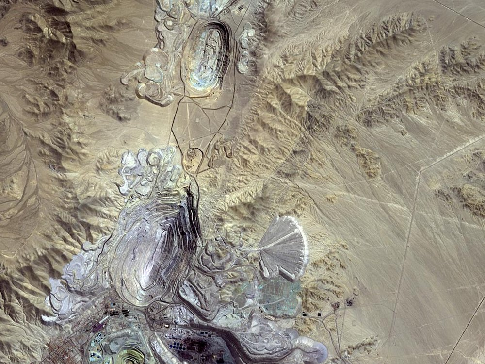

El boletín minero, leído por una máquina cada mañana.
Para estudios jurídicos, geomensores y equipos de análisis geoespacial que siguen pedimentos, manifestaciones y mensuras región por región.
Un pipeline en GitHub Actions descarga el Boletín Oficial de Minería, extrae las coordenadas de cada pedimento, manifestación y mensura, y publica un mapa y datos descargables — sin depender de que ningún computador se quede encendido.




Fotos: Diego Delso (CC BY-SA 4.0) · ESO/M. Zamani (CC BY 4.0) · Jonathan Zander (CC BY-SA 3.0) · NASA/METI/AIST/Japan Space Systems (dominio público) — vía Wikimedia Commons.
Cuatro pasos, sin intervención manual
Corre completo cada día en GitHub Actions, de principio a fin.
Scraping
Un navegador Chromium headless (Playwright) descarga los PDF de cada categoría, sorteando la protección anti-bot F5/TrafficShield del sitio oficial.
Análisis
Expresiones regulares extraen coordenadas UTM y dimensiones, tolerando la redacción propia de cada estudio jurídico.
Construcción geométrica
Se generan los polígonos —rectángulos para pedimentos y manifestaciones, vértices directos para mensuras— y se reproyectan a WGS84.
Publicación
Se generan el mapa Leaflet y los archivos GeoPackage/GeoJSON, y se publican en GitHub Pages.
Los cinco tipos de publicación del boletín
Mismos colores que el mapa interactivo, para que ambos se lean juntos.
Datos geoespaciales, listos para QGIS
Cada archivo lleva atributos de fecha y edición para filtrar por rango.
Se ejecuta sola, todos los días
Todo el pipeline corre en GitHub Actions bajo un cron diario — nadie necesita dejar un computador encendido ni ejecutar nada a mano. El scraper usa un navegador real para evitar el bloqueo anti-bot del sitio oficial, y cada corrida deja un reporte con las publicaciones que sí y las que no pudieron georreferenciarse.
El resultado se versiona directamente en el repositorio, así que el histórico completo queda trazable commit a commit.
Fuente oficial
Cada publicación georreferenciada proviene directamente del Boletín Oficial de Minería de Chile — el pipeline no agrega ni interpreta datos que el boletín no haya publicado ese día.
Ver el boletín oficial ↗